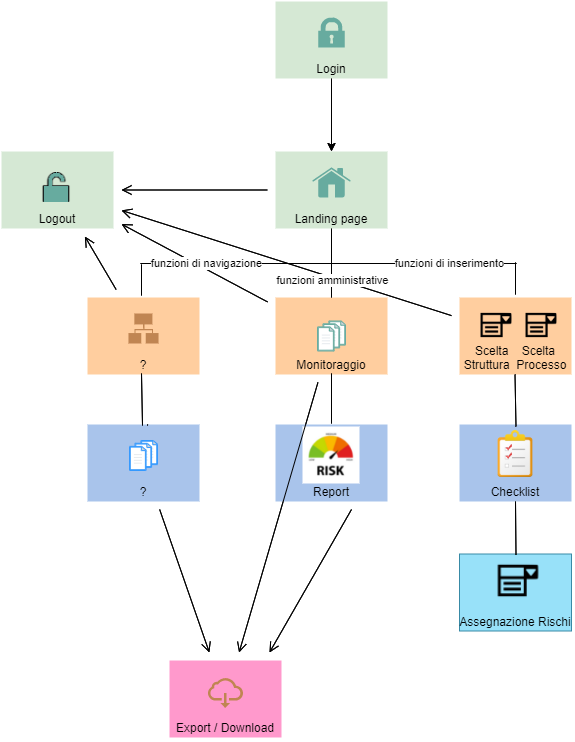

All’inizio dell’analisi, si è tentato a lungo di rendere la mappatura dei processi finalizzata alla valutazione del rischio – cioè la mappatura realizzata tramite questo progetto ROL – compatibile con la mappatura già esistente, realizzata a fini di efficientamento; a tal scopo sono stati anche predisposti degli specifici connettori.

Tuttavia, dopo un’attenta analisi della mappatura esistente, si è ritenuto che fosse necessario creare un nuovo dizionario dei processi, dal momento che il precedente dizionario, basato sul progetto Good Practice, non si attagliava bene al contesto della valutazione dei processi in rapporto al rischio corruttivo.
Il dizionario dei processi organizzativi esistente nasceva infatti con lo scopo di mappare l’attività dell’organizzazione al fine di tracciare e “fotografare” l’attività prodotta dagli uffici, mentre il progetto della mappatura dei processi in rapporto al rischio corruttivo può richiedere l’approfondimento di specifici aspetti, quindi di spacchettare magari quello che era un macroprocesso organizzativo in più macroprocessi distinti; pertanto, il dizionario dei processi rispetto al rischio corruttivo risulta trasversale e “incompatibile” rispetto a quello dei processi organizzativi.
Di conseguenza, pur partendo ed ereditando il database dei processi esistenti, è stato necessario creare ulteriori entità, con lo scopo di memorizzare un nuovo dizionario, peraltro articolato su una granularità a 3 livelli (macroprocesso, processo e sottoprocesso) - cui si aggiunge un ulteriore aggregatore: l’area di rischio - e, infine, un ulteriore livello, quello delle attività, o fasi, che sono trasversali a processi e sottoprocessi.
Il connettore tra i processi dell’anticorruzione e quelli organizzativi cui si faceva riferimento sopra è costituito da un’apposita entità debole associativa, in cui ogni riga è costituita dall’identificativo del sottoprocesso organizzativo cui corrisponde l’identificativo del sottoprocesso della mappatura anticorruttiva.